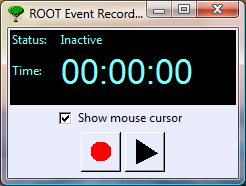
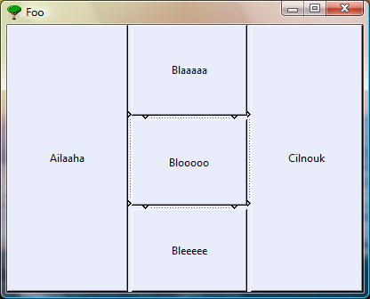

GUI
New Classes: TRecorder TGRecorder
TRecorder classes provide interface for recording and replaying events in ROOT.
Recorded events are:
Commands typed by user in command line (e.g. 'new TCanvas')
GUI events (mouse movement, button clicks, ...)
All the recorded events from one session are stored in one TFile and can be replayed again anytime.
Modifications in TRootCanvas menu:
Renamed 'Inspect' menu title to 'Tools'
Added 'Event Recorder' menu entry
Here is a screenshot of TGRecorder (GUI interface of the recorder):

New Class: TGPack
New Container class for vertical and horizontal grouping of frames.
It enforces a predictable resizing behaviour on children.
For an example of how to use it, see tutorials/eve/pack.C.

TRootBrowser
- Make the default url for the HTML plugin of TRootBrowser configurable via rootrc.
TGTab
- Added a 'Close Tab' icon in TGTabElement, allowing to close a tab element, and emitting a CloseTab(Int_t id) signal. The icon is active only on the actually activated tab.
- Implement CloseTab slot usage in TRootBrowser and in TGRootIDE.
TGTextEditor
- Allow to execute a macro without having to save it first.
TGSplitFrame
- Added a new signal method Docked(TGFrame*) to notify when a embedded frame has been docked.
- Added a new signal method Undocked(TGFrame*) to notify when a embedded frame has been undocked.
- Added a new getter method GetUndocked() returning a pointer on undocked frame, if any.
TGToolTip
- Added new constructor with global x, y position.
If neither fWindow nor fPad are set use global fX, fY that was passed from outside.
TGSplitter
- Added option to handle frame resizing externally.
TGView
- Added a protection against possible negative scroll values.
TGTextView
- Fix bottom line not being properly updated while scrolling.
- Solve a problem with vertical slider (avoid negative value when scrolling).
TGTextEdit
- Fix blinking cursor on some platforms/compilers
TGTextEntry
- Added optional parameter 'Bool_t emit' to TGTextEntry::SetText(const char* text, Bool_t emit = kTRUE);
- Made the same extension in sub-class TGNumberEntryField.
TGCompositeFrame
- Added new method virtual TGFrameElement* FindFrameElement(TGFrame *f) const; and use it in several TGCompositeFrame methods to simplify the code.
GUIHTML
TGHtml
- Implemented HTML <select> with TGListBox/TGCombobox and emit InputSelected(const char *name, const char *val) when changing selection.
TGHtmlBrowser
- Added the possibility to save current html page in a local file.